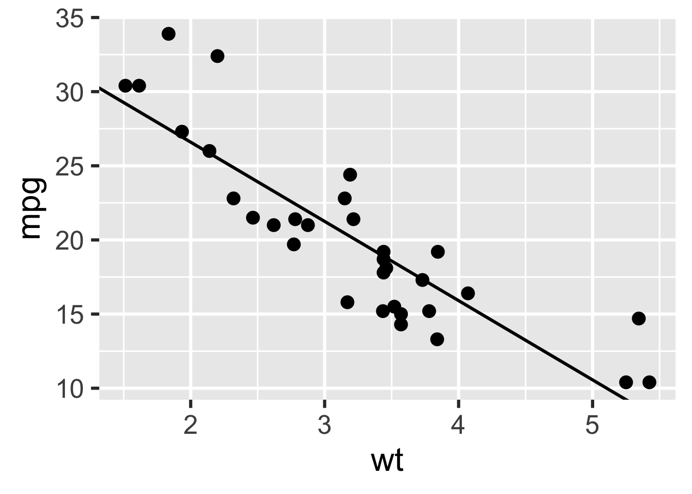

library(targets)targets Walkthrough
Recently, I feel like I’ve been in a rut with my R coding. It’s easy to settle into a nice data analysis routine. Especially when a lot of the projects do not really call for large workflows. But for work, I’ve gotten tasked with a project looking at a model that has a variety of parameters. Initially, I’ve just done it the hard way and hard coded the models with specific params but after 10 or so models, I’m like “ok Kenny” its time to see if you can make this more efficient so you don’t go effin crazy. So I asked Chat and it pointed me to the targets package.
Now I’ve heard about this package before but didn’t give it much attention before. I guess it’s finally time.
So what is targets? It’s a pipeline tool that’s specific for R. It skips unnecessary runtimes for tasks that are up to date, has implicit parallel computing, and abstracts files as R objects.
Let’s walk through a short analysis using the mtcars dataset and assess the relationship between mpg and wt. We will prepare the data, fit a model, and plot the model against the data.
In a target workflow, our file structure will look like this:
├── _targets.R ├── data.csv ├── R/ │ ├── functions.R
data.csv is pretty self explanatory
functions.R contains our user-defined functions
# R/functions.R
get_data <- function(file) {
read_csv(file, col_types = cols())
}
fit_model <- function(data) {
lm(mpg ~ wt, data) %>%
coefficients()
}
plot_model <- function(model, data) {
ggplot(data) +
geom_point(aes(x = wt, y = mpg)) +
geom_abline(intercept = model[1], slope = model[2]) +
theme_gray(24)
}_targets.R is used to configure and define the pipeline. We can run use_targets() to create an initial target script sort of like madlibs.
From the guide:
All target script files have these requirements.
Load the packages needed to define the pipeline, e.g. targets itself.2
Use tar_option_set() to declare the packages that the targets themselves need, as well as other settings such as the default storage format.
Load your custom functions and small input objects into the R session: in our case, with source(“R/functions.R”).
Write the pipeline at the bottom of _targets.R. A pipeline is a list of target definition objects, which you can create with tar_target(). Each target is a step of the analysis. It looks and feels like a variable in R, but during tar_make(), it will save the output as a file in _targets/objects/.
After setting up the configuration, we can run tar_manifest() which lists information about each target.
tar_manifest()Warning message:
package ‘targets’ was built under R version 4.5.2 # A tibble: 4 × 3
name command description
<chr> <chr> <chr>
1 file "\"mtcars.csv\"" Base R air quality data file
2 data "get_data(file)" Base R air quality data object
3 model "fit_model(data)" Regression of ozone vs temp
4 plot "plot_model(model, data)" Scatterplot of model & data We can also un tar_visnetwork() to display a dependency graph of the pipeline.
tar_visnetwork()Warning message:
package ‘targets’ was built under R version 4.5.2 And now the magic, we can finally run the pipeline via tar_make()
tar_make()✔ skipped pipeline [31ms, 4 skipped]
Warning message:
package ‘targets’ was built under R version 4.5.2 Then we can read the output via tar_read() and tar_load().
tar_read(plot)
Now, next time we run it, it will skip!
tar_make()✔ skipped pipeline [30ms, 4 skipped]
Warning message:
package ‘targets’ was built under R version 4.5.2 tar_outdated()Warning message:
package ‘targets’ was built under R version 4.5.2 character(0)Conclusions
I really like how smooth the whole process is. The graph is really helpful because it helps me understand what parts of the pipeline I need to run when changing one part of the code because I often rerun the entire thing to be sure.